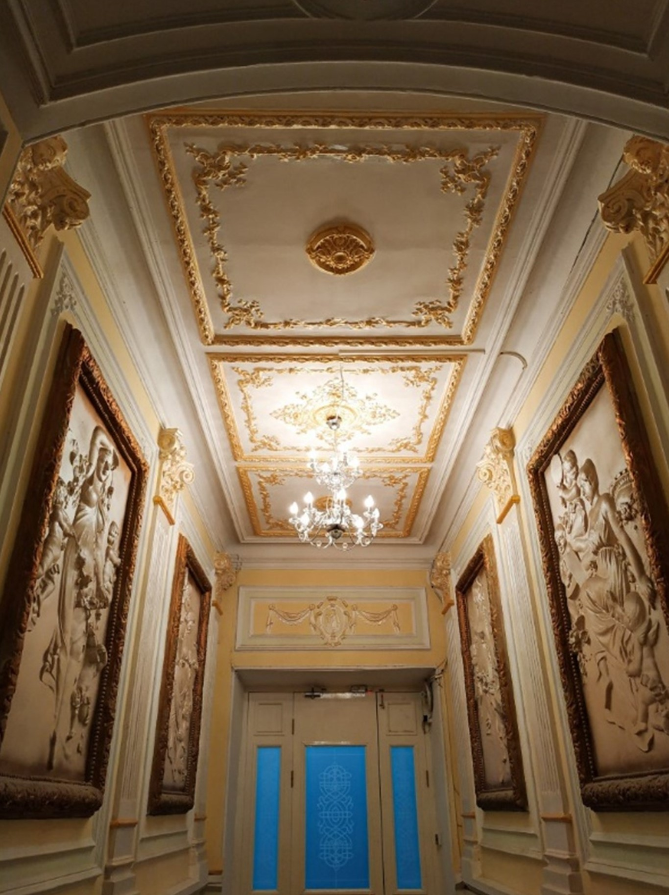
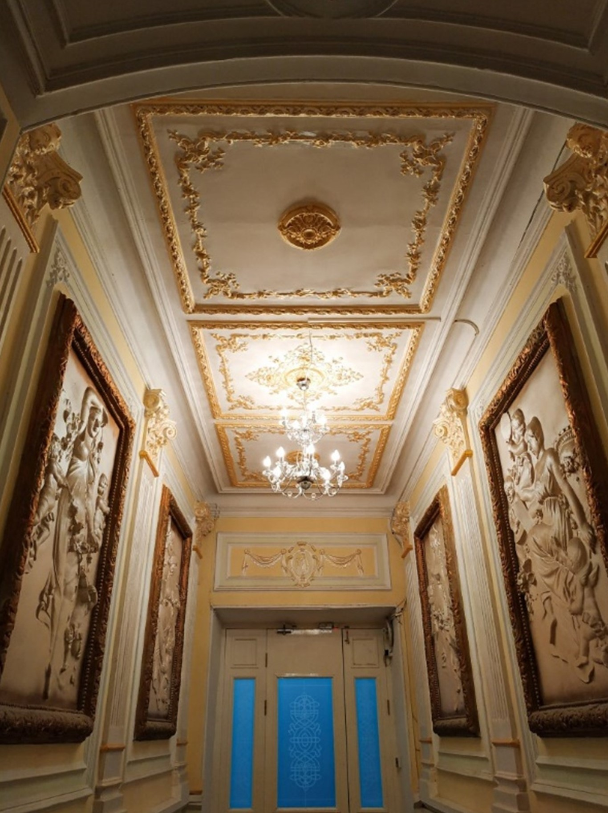

.png)
Привет! Меня зовут Джавид и я бакинец в нескольких поколениях. Чуть ли не больше всего на свете я люблю делиться атмосферой и красотой Баку с путешественниками, пытаясь влюбить в него каждого неравнодушного.
Тайны Старого Баку
Пеший формат
Старый Баку — сердце и душа города. Он запомнится вам колоритными улицами, древними мечетями, банями, дворцами и караван-сараями. Я расскажу о его архитектурных особенностях, секретных дорогах, оборонительных и культовых сооружениях
Что вас ожидает
Самое-самое в Старом Баку Вы увидите главные достопримечательности Старого Баку: Девичью башню, дворец Ширваншахов, двор Диванхана, мечети, минареты и караван-сараи. Кроме того, я покажу вам: старинные особняки ханов, Рыночную площадь и церковь Святого Николая.
Погружение в прошлое
Баку — место с многовековой историей. Я раскрою, почему Старый город решили построить на берегу Каспийского моря, как проектировали секретные дороги для его защиты и при каких обстоятельствах возвели могучие оборонительные крепостные стены.
Тур по Старому Городу. Обзорный тур на машине
Начинается экскурсия у крепосной стены Старого Города, где туристы получат информацию об окружающих их обьектах (первый памятник в Азербайджане – памятник национальному поэту Сабиру, памятник Низами, а также историю установки памятников)
Далее, получив информацию о крепостных стенах, предусматривается посещение Старого Города, где сразу можно почувствовать веяние Востока.
Посещение знаменитых по фильму «Цигель - Цигель Айлюлю!», «Черт побери!».
Осмотр караван - сараев XVI века, мечетей, бань, рыночной площади, Дворца Ширваншахов, а также символа Старого Города - Девичьей Башни.
Нагорный Парк (Аллея Шехидов, Тюркская Мечеть, мини площадь Дважды Героя Советского Союза генерал-майора Ази Асланова, Пламенные Башни, Вечный Огонь, смотровая площадка с изумительным видом на Баку и на Бакинскую Бухту, Бакинскую Телебашню)
Обзорная экскурсия в Центр Гейдара Алиева внешний осмотр
Современный Азербайджан признан в мире через своего
общенационального лидера Гейдара Алиева. Центр, носящий имя
Гейдара
Алиева, стал символом современного Азербайджана и Баку.
Нефтяной Баку
Пеший формат
Нефтяное наследие-история, которую вы не вычитаете в интернете
Вся информация была собрана по крупицам из уст
родственников
нефтяных магнатов и архивных данных!
В ходе этой экскурсии мы поговорим с вами о
нефтепромышленниках, которые родились на так называемой «земле
нефти», где люди, благодаря своему уму, железной воле и
энергии, превращались из бедняков в миллионеров. Прогуливаясь
по улицам, мы окажемся в самом сердце нефтяной истории -
Молоканском саду (синематограф "Микадо"). Поговорим о многих
магнатах. Откроем дверь подъезда, который переместит нас в XIX
век, благодаря старинным настенным росписям. Помимо этого, на
примере удивительной семейной истории одного из нефтяных
магнатов Баку, которую смело можно назвать драматической, мы
просмотрим целую эпоху нефтяного города.
"Если нефть — это королева мира, то Баку — это ее трон."
(Уинстон Черчилль)
Вы увидите главные достопримечательности Баку:
Первую женскую школу
первый памятник человеку в полный рост на
мусульманском Востоке
первый сквер советского Баку -пешеходную улицу
"Торговая"
Музей Истории (внешний осмотр)
первый театр на Востоке.
Мы откроем двери парадных, которые расписаны фресками.
Поговорим о
том, почему в Баку так много всего было ПЕРВОГО.
Я раскрою, почему Баку называли "Парижем Кавказа" и затронем
тему
того, как в Баку появлялись первые рынки.
 

Гобустанский заповедник на машине
Путешествие начнется с обширного историко-художественного
комплекса, расположенного в 70 км от Баку. Вы познакомитесь с
главными мотивами наскальных изображений и символикой
петроглифов, осмотрите древние стоянки и курганные
захоронения, пройдете по следам древнего человека и узнаете,
какие сведения удалось установить о первобытных племенах
Апшеронского полуострова.
Гобустан-это стоянка древнего человека, где было обнаружено 6
тысяч наскальных рисунков.
Что вас ожидает
Гобустанский музей состоит из двух частей: открытый музей и
закрытый.
Наше путешествие начнется с посещения закрытого музея, который
был
признан лучшим музеем Европы 2013 года. Именно в этом музее
получится изучить подробно наскальные рисунки, первобытные
инструменты, какими пользовались наши предки.
Вторая часть экскурсии включает в себя прогулку по открытому
музею, где мы увидим оригинальные рисунки и посетим пещеры.
Экскурсия разработана с участием археологов и историков
Атешгях и Янардаг
Атешгях - храм огня в Азербайджане, на Апшеронском
полуострове, в
30 км от центра Баку, на окраине поселка Сураханы, в разное
время
почитавшийся зороастрийцами, индуистами и сикхами. Возник в
XVII —
XVIII вв. на месте «вечных» неугасаемых огней — горящих
выходов
естественного газа, благодаря чему храм и носит название
«Атешгях», что означает «Дом огня», «Место огня».
Янардаг - одна из самых удивительных природных
достопримечательностей Апшеронского полуострова. Представляет
собой охваченный пламенем склон горы, который невозможно
потушить
ни дождем, ни засыпать песком, горящий на протяжении уже
нескольких тысячелетий.